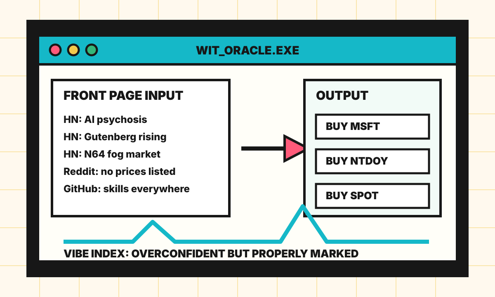

Front Page Oracle
The Mood of the Internet Today
The spreadsheet has started interpreting omens.

2026-05-16
Today the internet believes
- AI discourse has reached the stage where companies are not adopting tools so much as developing corporate weather systems.
- Project Gutenberg is the old internet returning with a tote bag full of public domain receipts.
- The Nintendo 64 is now an asset class because haze, polygons, and childhood are apparently a diversified strategy.
- Every store that hides prices is conducting a live experiment in consumer suspense.
- GitHub is mostly agent skills, MCP gadgets, and software trying to become a junior coworker with root access.
Alternate Timeline Headlines
- Federal Reserve Announces Interest Rates Will Now Be Set by Whether Anyone Says "Agentic"
- Library of Congress Discovers Public Domain, Immediately Asked to Pivot to SaaS
- Convenience Store Price Tags Reclassified as Premium Feature
- Startup Replaces Roadmap With A Vision Board Labeled Q4
Market Prophecy
Bullish on public domain texts, retro rendering, agent skills, and any company selling a button that makes the meeting shorter. Bearish on unlabeled snacks, damp robotaxis, and dashboards that say "insight" when they mean "guess."